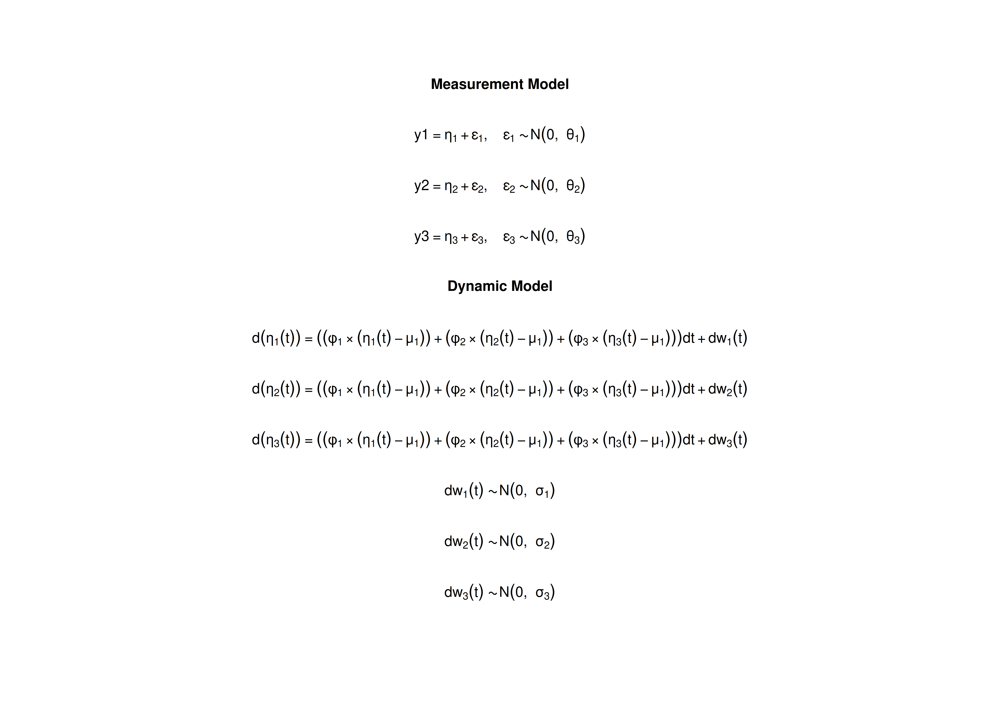

The Ornstein–Uhlenbeck Model
Ivan Jacob Agaloos Pesigan
2024-10-08
Source:vignettes/ou.Rmd
ou.RmdModel
The measurement model is given by where , , and are random variables and , , and are model parameters. represents a vector of observed random variables, a vector of latent random variables, and a vector of random measurement errors, at time and individual . denotes a vector of intercepts, a matrix of factor loadings, and the covariance matrix of .
An alternative representation of the measurement error is given by where is a vector of independent standard normal random variables and .
The dynamic structure is given by where is the long-term mean or equilibrium level, is the rate of mean reversion, determining how quickly the variable returns to its mean, is the matrix of volatility or randomness in the process, and is a Wiener process or Brownian motion, which represents random fluctuations.
Data Generation
Notation
Let be the number of time points and be the number of individuals.
Let the measurement model intecept vector be given by
Let the factor loadings matrix be given by
Let the measurement error covariance matrix be given by
Let the initial condition be given by
Let the long-term mean vector be given by
Let the rate of mean reversion matrix be given by
Let the dynamic process noise covariance matrix be given by
Let .
R Function Arguments
n
#> [1] 5
time
#> [1] 100
delta_t
#> [1] 0.1
mu0
#> [1] 0 0 0
sigma0
#> [,1] [,2] [,3]
#> [1,] 1.0 0.2 0.2
#> [2,] 0.2 1.0 0.2
#> [3,] 0.2 0.2 1.0
mu
#> [1] 0 0 0
phi
#> [,1] [,2] [,3]
#> [1,] -0.357 0.000 0.000
#> [2,] 0.771 -0.511 0.000
#> [3,] -0.450 0.729 -0.693
sigma
#> [,1] [,2] [,3]
#> [1,] 0.24455556 0.02201587 -0.05004762
#> [2,] 0.02201587 0.07067800 0.01539456
#> [3,] -0.05004762 0.01539456 0.07553061
nu
#> [1] 0 0 0
lambda
#> [,1] [,2] [,3]
#> [1,] 1 0 0
#> [2,] 0 1 0
#> [3,] 0 0 1
theta
#> [,1] [,2] [,3]
#> [1,] 0.2 0.0 0.0
#> [2,] 0.0 0.2 0.0
#> [3,] 0.0 0.0 0.2Visualizing the Dynamics Without Measurement Error and Process Noise (n = 5 with Different Initial Condition)


Using the SimSSMOUFixed Function from the
simStateSpace Package to Simulate Data
library(simStateSpace)
sim <- SimSSMOUFixed(
n = n,
time = time,
delta_t = delta_t,
mu0 = mu0,
sigma0_l = sigma0_l,
mu = mu,
phi = phi,
sigma_l = sigma_l,
nu = nu,
lambda = lambda,
theta_l = theta_l,
type = 0
)
data <- as.data.frame(sim)
head(data)
#> id time y1 y2 y3
#> 1 1 0.0 0.29937539 -1.37581548 1.3779071
#> 2 1 0.1 -0.98770381 -0.03632195 0.8363080
#> 3 1 0.2 0.33221051 -0.40321664 1.2054318
#> 4 1 0.3 -0.09485392 -0.82030556 1.0272653
#> 5 1 0.4 -1.50322069 -0.36841853 0.1821731
#> 6 1 0.5 -0.75049839 0.35752476 0.2862544
plot(sim)


Model Fitting
Prepare Initial Condition
dynr_initial <- dynr::prep.initial(
values.inistate = mu0,
params.inistate = c("mu0_1", "mu0_2", "mu0_3"),
values.inicov = sigma0,
params.inicov = matrix(
data = c(
"sigma0_11", "sigma0_12", "sigma0_13",
"sigma0_12", "sigma0_22", "sigma0_23",
"sigma0_13", "sigma0_23", "sigma0_33"
),
nrow = 3
)
)Prepare Measurement Model
dynr_measurement <- dynr::prep.measurement(
values.load = diag(3),
params.load = matrix(data = "fixed", nrow = 3, ncol = 3),
state.names = c("eta_1", "eta_2", "eta_3"),
obs.names = c("y1", "y2", "y3")
)Prepare Dynamic Process
dynr_dynamics <- dynr::prep.formulaDynamics(
formula = list(
eta_1 ~ (phi_11 * (eta_1 - mu_1)) + (phi_12 * (eta_2 - mu_2)) + (phi_13 * (eta_3 - mu_3)),
eta_2 ~ (phi_21 * (eta_1 - mu_1)) + (phi_22 * (eta_2 - mu_2)) + (phi_23 * (eta_3 - mu_3)),
eta_3 ~ (phi_31 * (eta_1 - mu_1)) + (phi_32 * (eta_2 - mu_2)) + (phi_33 * (eta_3 - mu_3))
),
startval = c(
mu_1 = mu[1], mu_2 = mu[2], mu_3 = mu[3],
phi_11 = phi[1, 1], phi_12 = phi[1, 2], phi_13 = phi[1, 3],
phi_21 = phi[2, 1], phi_22 = phi[2, 2], phi_23 = phi[2, 3],
phi_31 = phi[3, 1], phi_32 = phi[3, 2], phi_33 = phi[3, 3]
),
isContinuousTime = TRUE
)Prepare Process Noise
dynr_noise <- dynr::prep.noise(
values.latent = sigma,
params.latent = matrix(
data = c(
"sigma_11", "sigma_12", "sigma_13",
"sigma_12", "sigma_22", "sigma_23",
"sigma_13", "sigma_23", "sigma_33"
),
nrow = 3
),
values.observed = theta,
params.observed = matrix(
data = c(
"theta_11", "fixed", "fixed",
"fixed", "theta_22", "fixed",
"fixed", "fixed", "theta_33"
),
nrow = 3
)
)Prepare the Model
model <- dynr::dynr.model(
data = dynr_data,
initial = dynr_initial,
measurement = dynr_measurement,
dynamics = dynr_dynamics,
noise = dynr_noise,
outfile = "ou.c"
)Add lower and upper bounds to aid in the optimization.
model$lb[
c(
"phi_11",
"phi_12",
"phi_13",
"phi_21",
"phi_22",
"phi_23",
"phi_31",
"phi_32",
"phi_33"
)
] <- -1.5
model$ub[
c(
"phi_11",
"phi_12",
"phi_13",
"phi_21",
"phi_22",
"phi_23",
"phi_31",
"phi_32",
"phi_33"
)
] <- +1.5
Fit the Model
results <- dynr::dynr.cook(
model,
debug_flag = TRUE,
verbose = FALSE
)
#> [1] "Get ready!!!!"
#> using C compiler: ‘gcc (Ubuntu 11.4.0-1ubuntu1~22.04) 11.4.0’
#> Optimization function called.
#> Starting Hessian calculation ...
#> Finished Hessian calculation.
#> Original exit flag: 3
#> Modified exit flag: 3
#> Optimization terminated successfully: ftol_rel or ftol_abs was reached.
#> Original fitted parameters: 0.05485508 0.1965643 0.1128741 -0.2600789
#> -0.2739033 0.02599312 0.7412146 -1.002955 0.2049504 -0.9824316 1.5 -1.091145
#> -2.16558 0.136935 0.1205414 -3.228083 0.03768175 -3.136257 -1.525 -1.617376
#> -1.617815 0.00709613 -0.08813477 0.1935501 -1.572232 -0.3089991 0.7340692
#> -0.8959006 -1.792513 -19.50141
#>
#> Transformed fitted parameters: 0.05485508 0.1965643 0.1128741 -0.2600789
#> -0.2739033 0.02599312 0.7412146 -1.002955 0.2049504 -0.9824316 1.5 -1.091145
#> 0.1146834 0.01570417 0.0138241 0.04178387 0.00338646 0.04516774 0.2176211
#> 0.1984187 0.1983315 0.00709613 -0.08813477 0.1935501 0.2075814 -0.06414248
#> 0.1523791 0.4280597 -0.77886 1.423573
#>
#> Doing end processing
#> Successful trial
#> Total Time: 39.88833
#> Backend Time: 38.41751Summary
summary(results)
#> Coefficients:
#> Estimate Std. Error t value ci.lower ci.upper Pr(>|t|)
#> mu_1 0.054855 0.106843 0.513 -0.154553 0.264263 0.3040
#> mu_2 0.196564 0.096103 2.045 0.008206 0.384922 0.0207 *
#> mu_3 0.112874 0.081002 1.393 -0.045887 0.271636 0.0821 .
#> phi_11 -0.260079 0.288449 -0.902 -0.825429 0.305271 0.1839
#> phi_12 -0.273903 0.336724 -0.813 -0.933871 0.386064 0.2082
#> phi_13 0.025993 0.243637 0.107 -0.451527 0.503513 0.4575
#> phi_21 0.741215 0.207314 3.575 0.334886 1.147543 0.0002 ***
#> phi_22 -1.002955 0.235309 -4.262 -1.464152 -0.541759 <2e-16 ***
#> phi_23 0.204950 0.195284 1.050 -0.177799 0.587700 0.1472
#> phi_31 -0.982432 0.270797 -3.628 -1.513183 -0.451680 0.0002 ***
#> phi_32 1.500000 0.314170 4.774 0.884239 2.115761 <2e-16 ***
#> phi_33 -1.091145 0.261629 -4.171 -1.603929 -0.578361 <2e-16 ***
#> sigma_11 0.114683 0.045973 2.495 0.024578 0.204789 0.0065 **
#> sigma_12 0.015704 0.020884 0.752 -0.025228 0.056636 0.2262
#> sigma_13 0.013824 0.028060 0.493 -0.041173 0.068821 0.3112
#> sigma_22 0.041784 0.020201 2.068 0.002191 0.081376 0.0196 *
#> sigma_23 0.003386 0.020034 0.169 -0.035880 0.042653 0.4329
#> sigma_33 0.045168 0.039734 1.137 -0.032709 0.123045 0.1281
#> theta_11 0.217621 0.016232 13.407 0.185808 0.249434 <2e-16 ***
#> theta_22 0.198419 0.013582 14.609 0.171798 0.225039 <2e-16 ***
#> theta_33 0.198331 0.014609 13.576 0.169699 0.226964 <2e-16 ***
#> mu0_1 0.007096 0.230499 0.031 -0.444673 0.458866 0.4877
#> mu0_2 -0.088135 0.308570 -0.286 -0.692920 0.516650 0.3876
#> mu0_3 0.193550 0.545562 0.355 -0.875733 1.262833 0.3615
#> sigma0_11 0.207581 0.166826 1.244 -0.119392 0.534555 0.1070
#> sigma0_12 -0.064142 0.165005 -0.389 -0.387546 0.259261 0.3488
#> sigma0_13 0.152379 0.299302 0.509 -0.434242 0.739000 0.3055
#> sigma0_22 0.428060 0.317935 1.346 -0.195081 1.051201 0.0894 .
#> sigma0_23 -0.778860 0.527014 -1.478 -1.811789 0.254069 0.0701 .
#> sigma0_33 1.423573 0.958355 1.485 -0.454769 3.301915 0.0690 .
#> ---
#> Signif. codes: 0 '***' 0.001 '**' 0.01 '*' 0.05 '.' 0.1 ' ' 1
#>
#> -2 log-likelihood value at convergence = 2088.54
#> AIC = 2148.54
#> BIC = 2274.97#> [1] 0.00709613 -0.08813477 0.19355010Parameter Estimates
mu_hat
#> [1] 0.05485508 0.19656425 0.11287414
phi_hat
#> [,1] [,2] [,3]
#> [1,] -0.2600789 -0.2739033 0.02599312
#> [2,] 0.7412146 -1.0029554 0.20495044
#> [3,] -0.9824316 1.5000000 -1.09114528
sigma_hat
#> [,1] [,2] [,3]
#> [1,] 0.11468339 0.01570417 0.01382410
#> [2,] 0.01570417 0.04178387 0.00338646
#> [3,] 0.01382410 0.00338646 0.04516774
mu0_hat
#> [1] 0.00709613 -0.08813477 0.19355010
sigma0_hat
#> [,1] [,2] [,3]
#> [1,] 0.20758142 -0.06414248 0.1523791
#> [2,] -0.06414248 0.42805975 -0.7788600
#> [3,] 0.15237912 -0.77885999 1.4235727
beta_var1_hat <- expm::expm(phi_hat)
beta_var1_hat
#> [,1] [,2] [,3]
#> [1,] 0.7085379 -0.1409335 0.0006110088
#> [2,] 0.3590317 0.3792895 0.0770292410
#> [3,] -0.2586161 0.5936354 0.3894688545